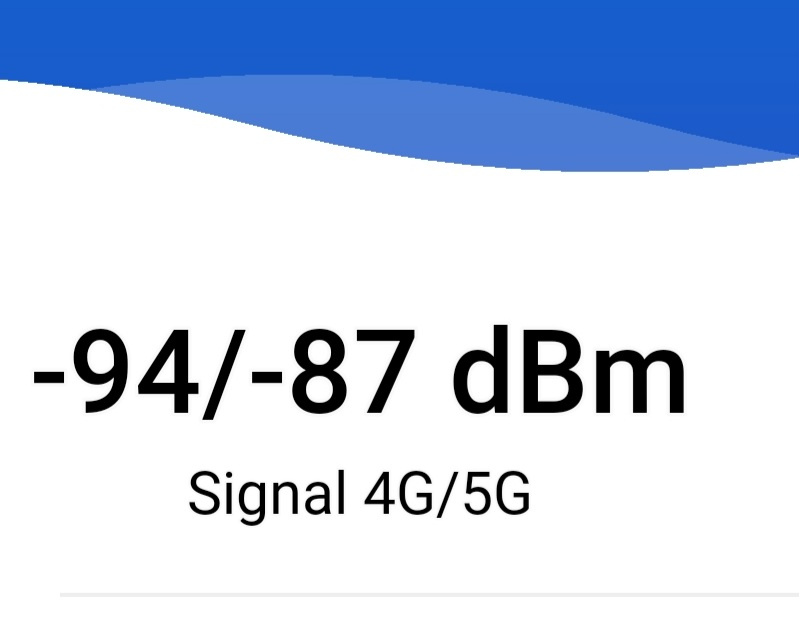

Bei mir gibt es heute auch Ausfälle. Interessanterweise habe ich jetzt auch in der Garage 5G das aber immer wieder kommt und verschwindet. Laut Störungsabfrage gibt es in meinen Gebiet derzeit Probleme. Schaut wohl nach einer 5G Optimierung aus

Hallo.
Gestern war bei mir(2662) der Empfang komplett weg, 2G, 3G und 4G. Das Ganze hat gut 8 Stunden gedauert. War das nur eine Störung, oder sind da schon Umbauarbeiten für 5G im Gange?
Bei mir gibt es heute auch Ausfälle. Interessanterweise habe ich jetzt auch in der Garage 5G das aber immer wieder kommt und verschwindet. Laut Störungsabfrage gibt es in meinen Gebiet derzeit Probleme. Schaut wohl nach einer 5G Optimierung aus

Das wäre dann ja schon mal ein gutes Zeichen.
Hast du bei dir in der Näche schon einen Mast der 5G auf Band 28 sendet und vielleicht einen Speedtest davon?
Nein leider, derzeit nur n78 mit 3.400 MHz.
Schade. 3400 Mhz Ausbau bei mir wird wohl in den besten Träumen nie passieren.
Kann es sein daß beim 700 Mhz Ausbau nicht wirklich was weitergeht und darum man nichts dazu findet?
Ist das ein Speedtest von 5G 700 Mhz?
https://www.netztest.at/de/Opentest?Oa66000ba-0873-4766-983d-179abf2e0770
In Seeboden wurde ja erst vor kurzen 5G auf 700 MHz gelauncht,gut möglich das der Speedtest von dieser Station ist. Bei mir wird wieder gearbeitet. Gut das VoWiFI funktioniert aber ich nehme diesen Ausfall gerne in Kauf wenn Magenta 5G bei mir erweitert. In der Garage jetzt sehr schwachen 5G Empfang

Bearbeitet von Rexalius2000
Diesen Fotos nach scheint es aber dort auch 3Ghz 5G zu geben. Die obere Antenne auf dem Foto schaut mir sehr nach 3Ghz aus.
Daher kann es ja auch ein 3Ghz Speedtest sein.
Ist schon seit ein paar Jahren 20 Mhz.
Die Störungen der letzte Woche haben sich gelohnt. 5G jetzt auch im gesamten Haus+Nebengebäude vorhanden.Ich bin begeistert-Danke Magenta


Bearbeitet von Rexalius2000
vor 4 Minuten schrieb Rexalius2000:
Welches Frequenzband?
Band 78. Was mich wundert ist, dass das Signal ca. 700 Meter reicht(Entfernung zum Masten). Zudem ist noch ein Wald vor meinem Haus und ein Hügel. Auf dem Hügel hatte ich vor ein paar Monaten das erste Mal 5G Empfang von Magenta bei uns im Dorf und jetzt auch zu Hause Indoor. Wo das mit der Störung letzte Woche anfing, war auch für ein paar Tagen anstatt Band 20 nur Band8 und Band1 verfügbar. Auch kämpfte ich und meine Nachbarn mit regelmäßigen Ausfällen, aktives und passives telefonieren war ohne VoWiFI nicht möglich.
2 Monate nach den vermehrten Ausfällen leider immer noch kein Upgrade :-(
Habe zwar(noch)kein 5G Gerät, aber da ja im Zuge von 5G auch LTE B3 ausgebaut wird, sollte ich ich das ja auch mit meinem LTE Gerät sehen können.
Ist der Ausbau vielleicht schon fertig und wartet nur noch auf die Freigabe bis es on Air gehen kann?
Oder kommt vielleicht doch kein LTE B3 bei mir im Zuge von 5G?
{kind=link}
{kind=link}
{kind=link}
{kind=link}
{kind=link}